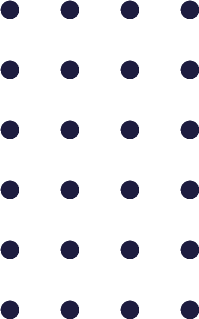

大阪市内、鶴橋にあります。
全身マッサージ&もみほぐしのお店、 鍼灸・あん摩健美道です。観光地の鶴橋という土地柄により、地元のお客様や観光客様などにも多数ご来店して頂いております。 大変リーズナブルな価格で､ お客様のご要望にあわせたメニューを多数ご用意いたしております。ペアでのご利用も大歓迎。 新規ご利用者様へのお得なサービスもご用意しております。 鶴橋にお越しの際はぜひ一度ご来店ください。国家資格所持者が施術を行っています。

施術者紹介